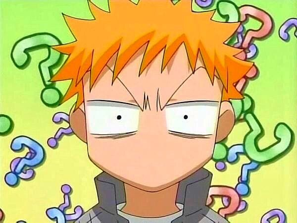

KONICHIWA MINASAN!
O-ha-yo! I am MS. This place is for those people who are noobies in the
world of anime and wanna learn more about it. Let me usher you to the the weird, wild, wonderful world of anime, and
it let you discover countless other amazing series.
WHAT IS ANIME?

Anime is a type of Animation usually from Japan. They have their own style and it
can show that in strange and wonderful ways. Anime also has its own sense of
comedy and has a unique way of thinking. It can get really deep and serious, or
it can become the silliest and craziest thing you have ever seen.
Anime is also related to manga, which is similar to the super hero comics,
well, in the way that its presented.
Anime is special to many
people for several different things and newcomers to anime need find out what
certain types of anime shows interest them in order for them to enjoy it more.